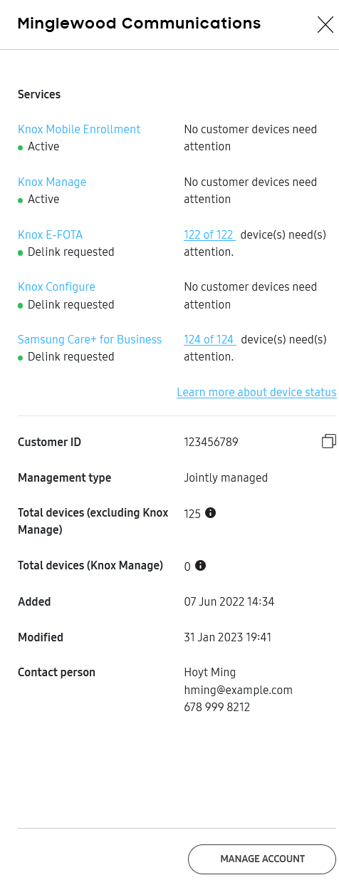

Manage customers
Last updated November 23rd, 2023
On this tab

Note
Click a rejected or pending customer name to view their application details in a pop-up. In the rejected customer pop-up, you can see your rejection by the listed customer for MSP device management. Additional guidance is provided to contact the customer as needed. In the pending customer pop-up, you can resend emails prompting the customer to grant permission.
Add a new customer
New customer accounts can be added to the MSP portal as needed from the Customers screen. These are customers who do not have a Knox account to use with an existing Knox cloud service.
To add a new customer account to the Knox MSP Portal:
Select Customers from the left navigation panel.
Click ADD CUSTOMER.

Provide the following CUSTOMER INFORMATION:
Company name - Provide the name of the prospective customer’s representative company.
Company size (number of employees) - Use the drop-down menu to set the number of employees represented by this prospective MSP customer as either 0-19, 20-99, 100-249, 250-499, 500-999, or 1000+.
Industry — Select those industries supported by this prospective MSP customer.
Country - Select the country where the requesting MSP customer is based.
Company Address 1 - Provide the requesting customer’s mailing address.
Company Address 2 - Optionally provide an additional address for the prospective company.
City - Provide the city of the MSP requesting company.
State - Provide the state of the MSP’s requesting customer.
ZIP Code - Provide the zip code of the prospective company.
Company website - Optionally provide the website of the prospective MSP customer.
Provide the following CONTACT PERSON information for the contact resource supporting the requesting company:

First name - Enter the first name of the contact resource supporting the MSP’s requesting company.
Last name - Enter the last name of the contact resource supporting the MSP’s requesting company.
Work email - Provide the business email of the contact resource supporting the MSP’s requesting company.
Note
If a non-work email domain is entered (for example, Gmail, Outlook, or Yahoo), then this customer can’t be set as a jointly managed customer, or they will be delinked in the future.
Phone - Provide the business phone number of the contact resource supporting the MSP’s requesting company.
Job title - Optionally enter the job title of the contact resource supporting the MSP’s requesting company.
Customer access permissions - Review the access permission options granted to the MSP’s requesting customer for their devices and data within their Knox services. Options include either Jointly managed customer or Fully managed customer. A managed customer’s super admin is informed of their access permission when the MSP requests the customer’s consent for service management. Only one access permission is applied to all managed services for the customer.
Fully managed customer — The customer is not granted access to any of their Knox solution portals. Only the Managed Service Provider will have the access. A customer does not need to create an account in order to be added as a fully managed customer, and once they’re added as a fully managed customer they can no longer create a Samsung Knox account. This customer can be changed to a jointly managed customer, as explained in the Edit customer account details section.
Jointly managed customer — The customer, just like the MSP admin, has full access to the Knox service portals and can manage the devices jointly with the Managed Service Provider. When you select this option, the customer gets an email notification and has to create a Samsung Knox account which they can do using the link in the same email. After creating the Samsung Knox account, they can access the Knox solution portal by logging in to the SamsungKnox.com dashboard.
Note
A jointly managed customer can’t be changed to a fully managed customer.
Assign Knox services to the customer account. Service options are Knox Mobile Enrollment, Knox Manage, Knox E-FOTA, Knox Asset Intelligence, Knox Configure, Knox Guard, and Samsung Care+ for Business. If necessary, the MSP admin can manage a customer in multiple Knox solutions at the same time.
Note
The MSP can migrate an existing Knox Mobile Enrollment customer under its management, and the MSP can manage Knox Mobile Enrollment functions (assign and update Knox Mobile Enrollment profile, and so on) on behalf of the customer within the Knox Mobile Enrollment console. For more information on Knox Mobile Enrollment, see Knox Mobile Enrollment on SamsungKnox.com.
When the required content has been provided and checked for accuracy, select ADD CUSTOMER to proceed with the MSP customer addition.
Note
As an MSP, you can’t be a device group manager for Knox Asset Intelligence. This means that when email alerts are sent to all admins, you will receive email alerts for the whole company. However, when email alerts are sent only to device group managers, you won’t receive the alerts unless your MSP email has been explicitly listed as an additional recipient. For details, see Integrate with a managed service provider in the Knox Asset Intelligence documentation.
Add an existing customer
You can onboard existing Knox Configure, Knox Mobile Enrollment, Knox Manage, Samsung Care+ for Business, Knox Asset Intelligence, and Knox E-FOTA customers.
Select ADD CUSTOMER.
Add the existing Customer’s ID in the Add an existing Samsung Knox customer dialog on the right and select LOOK UP.
Select REQUEST TO ADD.
Choose the Customer management type and which Knox cloud services you will manage for this customer.

An email is sent to the customer’s super admin informing the admin the MSP will be managing devices on the customer’s behalf (once they accept the invitation), and the super admin can no longer access the customer’s account.
The customer must sign in to the console, select the link, and allow the MSP for managing their devices. The MSP provides any additional KCS information directly to the customer.
Knox Configure, Knox Mobile Enrollment, Knox Manage, Samsung Care+ for Business, Knox Asset Intelligence, or E-FOTA features and functionality become active within MSP View once the customer approves the MSP.
Note
After an existing customer is moved to the Knox MSP portal for MSP management as a fully managed customer, then the customer loses access to the Knox Configure and Knox Mobile Enrollment consoles.
Note
If the customer you add didn’t complete the Complete Knox Manage registration step when they signed up, then you can create a Knox Manage tenant for them when migrating them. Knox Manage tenant IDs include a prefix and a domain name, where the domain name is taken from an email address. A prefix is not mandatory for a Knox Manage tenant ID, as long as its domain name is unique among existing IDs. Prefixes are alphanumeric and can use periods (.), hyphens (-), and underscores (_) as separators.
Note
As an MSP, you can’t be a device group manager for Knox Asset Intelligence. This means that when email alerts are sent to all admins, you will receive email alerts for the whole company. However, when email alerts are sent only to device group managers, you won’t receive the alerts unless your MSP email has been explicitly listed as an additional recipient. For details, see Integrate with a managed service provider in the Knox Asset Intelligence documentation.
Edit customer account details
To edit customer details such as their company information (like company name and address), the contact person’s name and email address, the customer access type, or to add a new Knox service, follow these steps:
Note
For a fully managed customer, you can only change the contact person’s first name, last name, and email address. For a jointly managed customer, only they can change this information.
Note
You cannot change the customer account details while the customer is in a Delink requested state.
- Select Customers from the left hand navigation in your MSP portal.
- Click the checkbox before the customer name.
- Click Manage customer account from the ACTIONS dropdown in the top right.
- On the MANAGE CUSTOMER ACCOUNT screen, you can change the customer’s company details, upgrade a fully managed customer to jointly managed customer and — in case of fully managed customers — change their contact person’s first name, last name, and email address.
Caution
Once a managed service has been added to a customer’s account, it can’t be removed.
If you want to remove a managed service from a customer’s account, you can either delink the customer and add them again or submit a support ticket.
Delink a customer
If you want to stop managing a customer account, you can initiate a delink request from the MSP console. However, for the request to complete, the end customer must agree to the delink request and sign-up for KCS services if they haven’t already done so. Until they accept the delink request, the MSP continues to manage their account. The MSP can revoke the request until customer takes an action.
You can only delink jointly managed customers. To change a customer’s type, see Edit customer account details.
To initiate the request, sign in to your MSP portal and follow these steps:
Go to the Customers tab.
Check the customer account that you want to delink.
From Actions, click Manage customer account.
In the Manage Customer Account window, click DELINK.
In the pop-up window, read the message and click CONFIRM if this is the behavior you want.
Note
When a delink request is initiated by the MSP, the customer status changes from Active to Delink Requested, and the customer gets a delink request email. For a customer with full-access, this is the email of super-admin, and for a fully-managed customer, it is the email associated with their customer account with the MSP. To create a KCS account, customer must use this email, otherwise, the request will not be processed.
If the customer ignores the email, then the MSP continues to manage their services as usual but with their status as Delink Requested on the MSP portal. The MSP can remind the customer to approve the Delink request by resending the Delink email following steps 1 through 3 above and clicking RESEND EMAIL.
In case of an existing customer, they sign in using their Knox Cloud Services credentials and take appropriate action as explained in the next section. In case of a new customer, in order to accept the delink request, the customer first needs to create a Knox cloud service account which is based on a Samsung account. They are guided through creating a new Samsung account and accepting agreements for the Knox solutions which the MSP manages for them. If they don’t wish to accept, they can ignore the request.
After logging in, the customer is shown a pop-up to accept or reject the request.
If they reject the request, then the MSP is informed and the status changes back to Active.
If they accept it, an email is sent to both parties. The the MSP can no longer access the customer portals. Customer super-admin gets full access, any sub-admins keep their existing roles, and all licenses purchased by MSP on behalf of the customer can continue to be used by the delinked customer.
Customer table
Customer information, such as Customer ID and Management type, can be viewed in the customer table.
You can customize the columns displayed in the customer table through the CUSTOMIZE TABLE menu. To access the CUSTOMIZE TABLE menu, click  at the top-right corner of the table.
at the top-right corner of the table.

Columns relating to customer Name, Service/Status, Customer ID, Management type, Total devices, and date Modified are displayed by default. Optionally, to view the date when a customer’s Knox cloud services account was created, select Created .
You can also generate a CSV file report for customer information by clicking DOWNLOAD CUSTOMER INFORMATION AS CSV.

The customer CSV file provides detailed information on:
Company Name — The name of the customer’s company.
Active services — Whether the Knox cloud services is active for the customer, including KNOX MOBILE ENROLLMENT, KNOX MANAGE, KNOX E-FOTA, KNOX CONFIGURE, KNOX GUARD, KNOX ASSET INTELLIGENCE, and Samsung Care+ for Business.
TOTAL DEVICES — The total number of devices linked to the customer, excluding the number of devices enrolled in Knox Manage. If you exclusively manage Knox Manage for your customers, this column displays the number of devices used in Knox Manage.
CUSTOMER ID — The unique identifier of the customer.
CREATED — The date when the customer’s Knox cloud services account was created.
MODIFIED — The date when the customer’s account was last modified by the MSP.
MSP LINKED — The date when the customer’s Knox cloud services account was linked by the MSP.
This document was updated for the Knox Partner Program 23.12 UAT.
On this tab
Note
Click a rejected or pending customer name to view their application details in a pop-up. In the rejected customer pop-up, you can see your rejection by the listed customer for MSP device management. Additional guidance is provided to contact the customer as needed. In the pending customer pop-up, you can resend emails prompting the customer to grant permission.
Add a new customer
New customer accounts can be added to the MSP portal as needed from the Customers screen. These are customers who do not have a Knox account to use with an existing Knox cloud service.
To add a new customer account to the Knox MSP Portal:
Select Customers from the left navigation panel.
Click ADD CUSTOMER.
Provide the following CUSTOMER INFORMATION:
Property Description Company name Provide the name of the prospective customer’s representative company. Company size (number of employees)** - Use the drop-down menu to set the number of employees represented by this prospective MSP customer as either 0-19, 20-99, 100-249, 250-499, 500-999, or 1000+. Industry Select those industries supported by this prospective MSP customer. Country Select the country where the requesting MSP customer is based. Company Address 1 Provide the requesting customer’s mailing address. Company Address 2 Optionally provide an additional address for the prospective company. City Provide the city of the MSP requesting company. State Provide the state of the MSP’s requesting customer. ZIP Code Provide the zip code of the prospective company. Company website Optionally provide the website of the prospective MSP customer. Provide the following CONTACT PERSON information for the contact resource supporting the requesting company:
Field Task First name Enter the first name of the contact resource supporting the MSP's requesting company. Last name Enter the last name of the contact resource supporting the MSP's requesting company. Work email Provide the business email of the contact resource supporting the MSP's requesting company.
Note
If a non-work email domain is entered (for example, Gmail, Outlook, or Yahoo), then this customer can't be set as a jointly managed customer, or they will be delinked in the future.
Phone Provide the business phone number of the contact resource supporting the MSP's requesting company. Job title Optionally enter the job title of the contact resource supporting the MSP's requesting company. Customer access permissions Review the access permission options granted to the MSP's requesting customer for their devices and data within their Knox services. Options include either Jointly managed customer or Fully managed customer. A managed customer's super admin is informed of their access permission when the MSP requests the customer's consent for service management. Only one access permission is applied to all managed services for the customer.
The customer types are:
- Fully managed customer. The customer is not granted access to any of their Knox solution portals. Only the Managed Service Provider will have the access. A customer does not need to create an account in order to be added as a fully managed customer, and once they're added as a fully managed customer they can no longer create a Samsung Knox account. This customer can be changed to a jointly managed customer, as explained in Edit customer account details.
- Jointly managed customer. The customer, just like the MSP admin, has full access to the Knox service portals and can manage the devices jointly with the Managed Service Provider. When you select this option, the customer gets an email notification and has to create a Samsung Knox account which they can do using the link in the same email. After creating the Samsung Knox account, they can access the Knox solution portal by signing in to the SamsungKnox.com dashboard.
Note
A jointly managed customer can't be changed to a fully managed customer.
Assign Knox services to the customer account. Service options are Knox Mobile Enrollment, Knox Manage, Knox E-FOTA, Knox Asset Intelligence, Knox Configure, Knox Guard, and Samsung Care+ for Business. If necessary, the MSP admin can manage a customer in multiple Knox solutions at the same time.
Note
The MSP can migrate an existing Knox Mobile Enrollment customer under its management, and the MSP can manage Knox Mobile Enrollment functions (assign and update Knox Mobile Enrollment profile, and so on) on behalf of the customer within the Knox Mobile Enrollment console. For more information on Knox Mobile Enrollment, see Knox Mobile Enrollment on SamsungKnox.com.
When the required content has been provided and checked for accuracy, select ADD CUSTOMER to proceed with the MSP customer addition.
Note
As an MSP, you can’t be a device group manager for Knox Asset Intelligence. This means that when email alerts are sent to all admins, you will receive email alerts for the whole company. However, when email alerts are sent only to device group managers, you won’t receive the alerts unless your MSP email has been explicitly listed as an additional recipient. For details, see Integrate with a managed service provider in the Knox Asset Intelligence documentation.
Add an existing customer
You can onboard existing Knox Configure, Knox Mobile Enrollment, Knox Manage, Samsung Care+ for Business, Knox Asset Intelligence, and Knox E-FOTA customers.
Select ADD CUSTOMER.
Add the existing Customer’s ID in the Add an existing Samsung Knox customer dialog on the right and select LOOK UP.
Select REQUEST TO ADD.
Choose the Customer management type and which Knox cloud services you will manage for this customer.
An email is sent to the customer’s super admin informing the admin the MSP will be managing devices on the customer’s behalf (once they accept the invitation), and the super admin can no longer access the customer’s account.
The customer must sign in to the console, select the link, and allow the MSP for managing their devices. The MSP provides any additional KCS information directly to the customer.
Knox Configure, Knox Mobile Enrollment, Knox Manage, Samsung Care+ for Business, Knox Asset Intelligence, or E-FOTA features and functionality become active within MSP View once the customer approves the MSP.
Note
After an existing customer is moved to the Knox MSP portal for MSP management as a fully managed customer, then the customer loses access to the Knox Configure and Knox Mobile Enrollment consoles.
Note
If the customer you add didn’t complete the Complete Knox Manage registration step when they signed up, then you can create a Knox Manage tenant for them when migrating them. Knox Manage tenant IDs include a prefix and a domain name, where the domain name is taken from an email address. A prefix is not mandatory for a Knox Manage tenant ID, as long as its domain name is unique among existing IDs. Prefixes are alphanumeric and can use periods (.), hyphens (-), and underscores (_) as separators.
Note
As an MSP, you can’t be a device group manager for Knox Asset Intelligence. This means that when email alerts are sent to all admins, you will receive email alerts for the whole company. However, when email alerts are sent only to device group managers, you won’t receive the alerts unless your MSP email has been explicitly listed as an additional recipient. For details, see Integrate with a managed service provider in the Knox Asset Intelligence documentation.
View customer details
You can view an existing customer’s details by clicking their name in the Customers table.
Under Services, you can see each service that you’re managing for the customer, the service status, and the number of devices that require attention.

Edit customer account details
To edit customer details such as their company information (like company name and address), the contact person’s name and email address, the customer access type, or to add a new Knox service, follow these steps:
Note
For a fully managed customer, you can only change the contact person’s first name, last name, and email address. For a jointly managed customer, only they can change this information.
Note
You cannot change the customer account details while the customer is in a Delink requested state.
- Select Customers from the left hand navigation in your MSP portal.
- Click the checkbox before the customer name.
- Click Manage customer account from the ACTIONS dropdown in the top right.
- On the MANAGE CUSTOMER ACCOUNT screen, you can change the customer’s company details, upgrade a fully managed customer to jointly managed customer and — in case of fully managed customers — change their contact person’s first name, last name, and email address.
Caution
Once a managed service has been added to a customer’s account, it can’t be removed.
If you want to remove a managed service from a customer’s account, you can either delink the customer and add them again or submit a support ticket.
Delink a customer
If you want to stop managing a customer account, you can initiate a delink request from the MSP console. However, for the request to complete, the end customer must agree to the delink request and sign-up for KCS services if they haven’t already done so. Until they accept the delink request, the MSP continues to manage their account. The MSP can revoke the request until customer takes an action.
You can only delink jointly managed customers. To change a customer’s type, see Edit customer account details.
To initiate the request, sign in to your MSP portal and follow these steps:
Go to the Customers tab.
Check the customer account that you want to delink.
From Actions, click Manage customer account.
In the Manage Customer Account window, click DELINK.
In the pop-up window, read the message and click CONFIRM if this is the behavior you want.
Note
When a delink request is initiated by the MSP, the customer status changes from Active to Delink Requested, and the customer gets a delink request email. For a customer with full-access, this is the email of super-admin, and for a fully-managed customer, it is the email associated with their customer account with the MSP. To create a KCS account, customer must use this email, otherwise, the request will not be processed.
If the customer ignores the email, then the MSP continues to manage their services as usual but with their status as Delink Requested on the MSP portal. The MSP can remind the customer to approve the Delink request by resending the Delink email following steps 1 through 3 above and clicking RESEND EMAIL.
In case of an existing customer, they sign in using their Knox Cloud Services credentials and take appropriate action as explained in the next section. In case of a new customer, in order to accept the delink request, the customer first needs to create a Knox cloud service account which is based on a Samsung account. They are guided through creating a new Samsung account and accepting agreements for the Knox solutions which the MSP manages for them. If they don’t wish to accept, they can ignore the request.
After logging in, the customer is shown a pop-up to accept or reject the request.
If they reject the request, then the MSP is informed and the status changes back to Active.
If they accept it, an email is sent to both parties. The the MSP can no longer access the customer portals. Customer super-admin gets full access, any sub-admins keep their existing roles, and all licenses purchased by MSP on behalf of the customer can continue to be used by the delinked customer.
Customer table
Customer information, such as Customer ID and Management type, can be viewed in the customer table.
You can customize the columns displayed in the customer table through the CUSTOMIZE TABLE menu. To access the CUSTOMIZE TABLE menu, click at the top-right corner of the table.
Columns relating to customer Name, Service/Status, Customer ID, Management type, Total devices, and date Modified are displayed by default. Optionally, to view the date when a customer’s Knox cloud services account was created, select Created .
You can also generate a CSV file report for customer information by clicking DOWNLOAD CUSTOMER INFORMATION AS CSV.
The customer CSV file provides detailed information on:
| Data | Description |
|---|---|
| Company Name | The name of the customer’s company. |
| Active services | Whether the Knox cloud services is active for the customer, including KNOX MOBILE ENROLLMENT, KNOX MANAGE, KNOX E-FOTA, KNOX CONFIGURE, KNOX GUARD, KNOX ASSET INTELLIGENCE, and Samsung Care+ for Business. |
| TOTAL DEVICES | The total number of devices linked to the customer, excluding the number of devices enrolled in Knox Manage. If you exclusively manage Knox Manage for your customers, this column displays the number of devices used in Knox Manage. |
| CUSTOMER ID | The unique identifier of the customer. |
| CREATED | The date when the customer’s Knox cloud services account was created. |
| MODIFIED | The date when the customer’s account was last modified by the MSP. |
| MSP LINKED | The date when the customer’s Knox cloud services account was linked by the MSP. |
Is this page helpful?